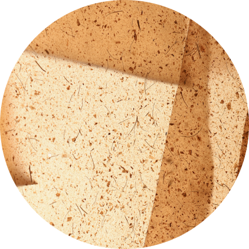

Meet Peelsphere
Peelsphere is a truly circular material made from fruit waste and algae through advanced material engineering. It is beautiful, durable, versatile, and biodegradable and can be an ideal alternative to leather and synthetic leather. Peelsphere
is created by redefining fruit waste, reducing carbon footprint, and designing for circularity.
Future of biomaterial

Peelsphere is a bio-innovated material born at the intersectionality of design, material science and sustainability, with a mission to inspire a sustainable, healthy and balanced lifestyle through its quality and beauty.